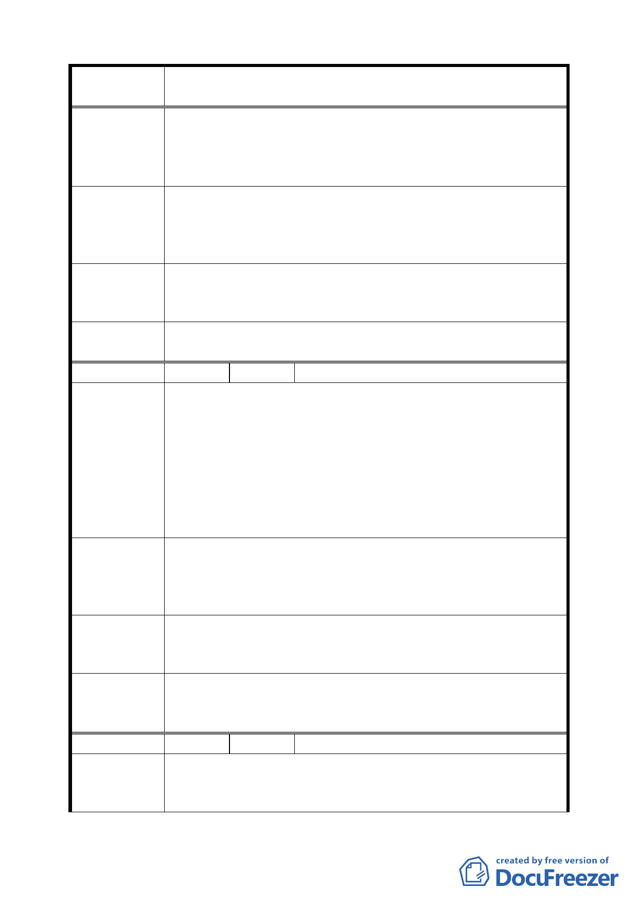

案 名 臺北市文山區都市計畫通盤檢討（主要計畫）案
（主景 1）
道可通車輛、行人，劃有直線計畫道路後，236 巷口現
門牌 3 號建屋將既成道路阻斷。
二、市府新工處曾召集土地房屋所有權人研商徵收，因需款
一億元以上，市府無力補償。
請依照既成巷道向西側拆除三、四戶房屋，成為微弧形 10
建議辦法
米以上寬巷道，直通 236 巷口 3 號前，市府可免除土地徵收、
房屋拆除一億元以上徵收費用，巷內破舊房舍得以改建，改
善市容觀瞻，美化環境衛生。
專 案 小 組 現有道路不足 10 公尺，不論調整路型與否，都需拆除二側房
審 查 結 論 屋，且本陳情之建議路線將造成南北道路系統不連貫，故維
( 9 4 . 7 . 4 ) 持原計畫。
委員會議
決議
依專案小組審查結論辦理。
編 號 ３ 陳情人 景仁里張耿暉里長（09430082800）
一、就瀝青拌合場南側變更為「專案住宅區」土地係河川沖
積而成的沙礫質土地，不宜興建高樓大廈，請派專家探
勘鑒察。
陳 情 理 由 二、該地地處臺北市西南邊陲，並在水源快速道下方，環境
（主景 8）
吵雜煩囂，實不宜闢為住宅區。
三、 推薦該標的土地，位於景美溪、新店溪交會，又為早期
文山區先民上岸之首善區，風景優美，只要妥善規劃，
必能型塑一有文化特質的地區性公園。
環觀羅斯福路以西並無地區型公園，供民眾休閒活動之場
建議辦法
所，是以建議體恤民之所需，能准請得變更成為「公園用地」，
並於其內建造一區里民活動文化會館，即便為民萬福，引首
頸盼。
專 案 小 組 關於瀝青拌合場用地之變更，將由市府另擬細部計畫中要求
審 查 結 論 基地綠化比例，至於文化會館、休憩場所等地方設施需求，
( 9 4 . 7 . 4 ) 建議也移請市府在擬細部計畫時考量處理。
委員會議
決議
關於開放空間將由瀝青拌合場用地變更案中要求退縮提供，
至於里民活動中心等服務性設施，則請市府擬定細部計畫案
時於內部考量。
編 號 ４ 陳情人 林明漢（09430082800、09430167400）
陳情理由
（景美）
一、羅斯福路五段已有一部份為商業區。
二、自公館圓環往景美、羅斯福路五段應全改為商用地，以
增政府稅收，發展商業及更美化市容。
五